Phase 5 & 6 · Protection System Implementation Manual
Ashuganj South 450 MW CCPP Protection Settings & Simulink Manual
A complete, detailed, and student-friendly engineering manual explaining where each protection relay lives, how their ratings and settings were derived from fault current studies, which elements came from the original SLD versus which ones we calculated, and how every setting protects equipment across all fault cases.
1 · Plant Overview & Protection Philosophy
The Ashuganj South 450 MW Combined Cycle Power Plant (CCPP) operates in a highly efficient single-shaft (1S) configuration. In this design, one Siemens SGT5-4000F Gas Turbine and one SST-3000 Steam Turbine sit on the exact same mechanical shaft, driving a single synchronous generator (Siemens SGen5-2000H, rated 458 MVA nominal / 518 MVA maximum at 22 kV, power factor 0.85).
Electrical Power Train:
- 22 kV Generator Bus: Connects generator to the Generator Circuit Breaker (GCB, 52G / 10BAC10).
- Generator Step-Up Transformer (GSUT, 10BAT10): 515 MVA, 230/22 kV, vector group
YNd1, 16% impedance. Steps power up from 22 kV to the national 230 kV grid. - 230 kV GIS Switchyard: Siemens 8DN9 Gas Insulated Switchgear rated 50 kA symmetrical breaking, 125 kA peak making, feeding into double-circuit 230 kV overhead lines.
- Auxiliary Transformers: UAT (10BBT10, 22/6.9 kV, Dyn11, 25 MVA) and GAT (10BBT20, 230/6.9 kV, YNyn0+d11, 25 MVA) supplying the 14 MW plant auxiliary load.
- Generator Grounding: High-resistance neutral grounding via Neutral Grounding Resistor (NER 10BAB11, 60 Ω primary + 2.62 Ω secondary via 25.4:1 transformer), restricting single-line-to-ground fault current to only ~7.27 A.
Protection Philosophy Highlights:
1. Unit Protection (Differential): 100% of generator winding (87G) and GSUT transformer (87T) are protected by instantaneous unit differential relays. Differential protection is inherently selective: it trips instantaneously for internal faults and restrains for external faults.
2. High-Speed Busbar & Line Protection: 87B differential protects the 230 kV switchyard bus within 35 ms. 87L line differential protects the transmission corridor.
3. Graded Time-Overcurrent Backup: Overcurrent relays (51) are graded with a deliberate 300 ms Coordination Time Interval (CTI) to ensure downstream breakers trip before upstream sources are disconnected.
4. Sensitive Stator Ground Protection: Phase CTs (15,000/1 A) cannot measure 7 A. A dedicated 20/1 neutral CT was added to detect ground faults.
2 · Separation: Taken from SLD vs. Added by Our Fault Study
An essential requirement of this manual is to clearly distinguish between what was already documented in the original Single Line Diagram (SLD) / OEM datasheets versus what our engineering study calculated and added from fault current analysis.
The original project drawings (GIS SLD INEL-112070-00-ELC-DE-0026, Rev 03, and Siemens reports) gave the physical equipment layout and indicated which relay models were installed. Crucially, the documents provided NO numerical trip settings (pages 8–39 of the 7UM622 report were missing, and all pickup entries were blank/NaN). The SLD provided:
| Ref | Original Item / Equipment | What the Original SLD / OEM Document Gave | Source Document | What Was MISSING (Filled by Us) |
|---|---|---|---|---|
| A1 | Transformer Differential Relay | Siemens 7UT6331-5QB92-4BC0+L0S relay panel; presence in bay F12/F13 | GIS One-Line Dwg; Rev 03 SLD | Missing pickup current, restraint slopes (Slope 1/2), knee point, operating delay |
| A2 | Line Differential Protection | 2 × Siemens 7SD5221 line differential relay units | SLD Rev 03; Bay 10ADA10 | Missing pickup threshold, communication channel delay allowance, slope |
| A3 | Busbar Differential Protection | Siemens 7SS523 decentralized busbar protection relay hardware | GIS One-Line Dwg | Missing differential pickup threshold, stabilization factor, operating time |
| A4 | Generator Protection Relay | Siemens 7UM622 multi-function relay (Panel +10CHA) | Siemens Report BD1015 (pp. 6–7) | Setting pages 8–39 were absent; missing 51 pickup, TMS, curve selection, 87G slopes |
| A5 | Generator CTs and VTs | 15,000 / 1 A phase CTs (3 cores: sys1, sys2, metering); VT ratio 22 kV/√3 : 100 V/√3 | Siemens Report §2.1.2 | Missing functional core assignment and sensitive neutral CT (see B2) |
| A6 | 230 kV GIS Switchyard & Breakers | Siemens 8DN9 GIS, rated 50 kA breaking, 125 kA peak; Breakers labeled Q0 | 230kV GIS Datasheet | Missing bay overcurrent backup settings, grading delays, mechanism timings |
| A7 | Neutral Earthing Resistor (NER) | NER 10BAB11: 60 Ω primary, 2.62 Ω secondary, transformer ratio 25.4:1 | Siemens Report §2.3 | Missing ground fault relay settings to detect the limited 7.27 A fault current |
| A8 | Owner Protection Requirements | Overcurrent curve: IEC Standard Inverse (SI); target CTI = 300 ms (0.3 s) | APSCL Owner Form | Missing individual TMS multipliers to achieve the 300 ms grading |
Using our Phase 4 symmetrical component fault study (analyzing 3-phase LLL, single-line-to-ground LG, line-to-line LL, and double-line-to-ground LLG faults from 126 kA down to 7.27 A), we mathematically designed, graded, and implemented the following complete numerical settings:
| Ref | Relay Element | Setting Chosen by Us | Derived From Which Fault Result | Engineering Rationale & Why It Was Needed |
|---|---|---|---|---|
| B1 | GEN-51 Generator Overcurrent |
17,170.8 A primary TMS = 0.10 (IEC-SI) |
F1 3-phase fault = 126.21 kA vs. Max load current = 14,309 A | Set at $1.20 \times I_{\text{max}}$ to avoid nuisance tripping under maximum continuous load. TMS=0.10 grades 1.76 s above downstream GSUT-51. |
| B2 | GEN-51N Sensitive Stator Earth |
4.0 A primary TMS = 0.15 (IEC-SI) + Dedicated 20/1 CT |
F1 Ground Fault LG = 7.27 A | Phase CTs (15,000/1 A) give 0.000485 A secondary (blind). Adding a 20/1 neutral CT yields 0.3635 A secondary, tripping in 1.75 s with 1.82× margin. |
| B3 | GSUT-HV-51 Transformer HV Backup |
1,380.0 A primary TMS = 0.55 (IEC-SI) |
Nominal through-load = 1,149.7 A at 230 kV; F1/F2 through-current | Set at $1.20 \times 1,149.7\text{ A} = 1,380\text{ A}$. TMS=0.55 mathematically solves the mandatory 300 ms CTI grading against Q0-51. |
| B4 | GIS-Q0-51 Transformer Bay Backup |
1,500.0 A primary TMS = 0.80 (IEC-SI) |
F3/F4 switchyard faults (3 to 7 kA through Q0) | Set above transformer rated current (1,292.8 A) and below bay 2,000 A rating. Serves as final overcurrent backup for the 230 kV bay. |
| B5 | GEN-87G Generator Differential |
2,403.8 A ($0.20 \times I_{\text{nom}}$) Delay = 0.045 s |
F1 generator branch fault = 55.05 kA | High-speed instantaneous unit protection. Restrains under healthy load and external faults; trips in 45 ms for internal stator winding faults. |
| B6 | GSUT-87T Transformer Differential |
387.84 A ($0.30 \times I_{\text{nom,HV}}$) Slopes = 30% / 60% Delay = 0.045 s |
F2 transformer LV fault = 5.27 kA on HV base | Dual-slope percentage restraint. Compares HV and LV currents with vector group (YNd1) rotation and zero-sequence filtering. Clears internal faults in 45 ms. |
| B7 | GIS-87B Busbar Differential |
320.0 A ($0.20 \times 1,600\text{ A}$) Slope = 30%, Delay = 0.035 s |
F3 230 kV bus fault = 50.53 kA | Detects bus spill current. Converts what would be a 7.28 s dangerous overcurrent delay into a clean ~90 ms total clearing (35 ms relay + 50 ms breaker). |
| B8 | LINE-7SD (87L) Line Differential |
320.0 A ($0.20 \times I_n$) Delay = 0.040 s effective |
F4 transmission line fault = 14.33 kA | Compares line sending and receiving ends via optical link. Clears mid-line faults in 40 ms (35 ms detection + 5 ms communication delay). |
| B9 | Breaker Mechanism & DC Gating | 50 ms mechanism delay Trip interlock at $V_{dc} \ge 88\text{ V}$ |
Physical SF6 breaker opening characteristics | Models real circuit breaker opening time (contact separation + arc extinction) and verifies 110 V DC battery health before tripping. |
3 · Rating Choices & Step-by-Step Mathematical Derivations
Here is the exact step-by-step arithmetic proving how each setting was derived from the physical equipment parameters and fault current results.
GEN-51 Overcurrent Calculation
The generator is rated at 518 MVA maximum at 20.9 kV ($22\text{ kV} - 5\%$):
I_max = 518,000,000 / (√3 × 20,900) = 14,309.28 A
I_pickup = 1.20 × I_max = 1.20 × 14,309.28 = 17,170.8 A
I_sec = 17,170.8 / 15,000 (CT) = 1.14472 A secondary
A 1.20 multiplier provides a 20% security margin above full load, preventing nuisance tripping during heavy generation. TMS = 0.10 grades 1.76 s above downstream relays.
GSUT-HV-51 Overcurrent Calculation
The transformer nominal through-load is 458 MVA at 230 kV:
I_load = 458,000,000 / (√3 × 230,000) = 1,149.68 A
I_pickup = 1.20 × 1,149.68 = 1,379.62 A → 1,380 A
I_sec = 1,380 / 1,600 (CT) = 0.8625 A secondary
TMS = 0.55 was mathematically solved using the IEC SI curve to guarantee the mandatory 300 ms CTI margin against downstream breaker Q0.
GEN-51N & NER Physics (The 7.27 A Story)
Generator neutral grounding resistor calculation:
Secondary resistor = 2.62 Ω
Referred resistance = n² × 2.62 = (25.4034)² × 2.62 = 1,690.8 Ω
Total loop R = 60 Ω (primary) + 1,690.8 Ω = 1,750.8 Ω
Fault current I_LG = (22,000 / √3) / 1,750.8 = 7.25 A ≈ 7.27 A
Why Phase CTs Fail: 7.27 A on 15,000/1 A phase CTs gives 0.000485 A (0.485 mA)—invisible to relays. Solution: Dedicated 20/1 neutral CT gives 0.3635 A secondary at 7.27 A, operating at 1.82× pickup (4 A primary / 0.20 A secondary dial).
Differential Settings (87G, 87T, 87B)
Differential pickup and restraint characteristics:
Secondary = 2,403.8 / 15,000 = 0.1603 A
GSUT-87T: 0.30 × I_nameplate (1,292.8 A) = 387.84 A primary
Secondary = 387.84 / 1,600 = 0.2424 A
Slopes: Slope 1 = 30%, Slope 2 = 60%, Knee = 2 × 1,292.8 A
GIS-87B & LINE-87L: 0.20 × 1,600 A CT = 320 A primary
The 20% and 30% pickup thresholds prevent spurious trips caused by CT mismatch, tap changer offsets, and magnetizing inrush, while detecting internal faults instantly.
4 · Where Each Protection Lives in the Simulink Model
The entire power system and closed-loop protection system is modeled in MATLAB/Simulink under the canonical model Phase6/model/PHASE6_ASHUGANJ_CCPP_DYNAMIC_MODEL.slx (and its closed-loop simulation twin Phase6/PHASE6_ASHUGANJ_CCPP_CLOSED_LOOP_TRIP.slx).
The Architectural Core: One Central Relay Engine
Unlike basic textbook simulations with fragmented separate blocks for each relay, all seven active protection functions are implemented inside ONE vector-optimized Level-2 MATLAB S-function block located at:
Parameters flow automatically into this block from Phase6/scripts/phase6_relay_parameters.m, which reads directly from our Phase 5 settings database (phase5_relay_settings.csv). The engine evaluates relays in the fixed sequence:
[1: GEN-51, 2: GSUT-51, 3: GEN-51N, 4: 87G, 5: 87T, 6: 87B, 7: 87L].
Complete Trip Execution Chain (From Sensing to Arc Extinction):
Measurements subsystem, generating synchronized phasors P6_PHASORS and neutral current M.Ineutral_A.
phase6_relay_sfun compares signals against pickups. For differential elements, it computes spill and restraint currents. For overcurrent elements, it integrates the IEC SI curve equation: $t = \frac{0.14 \times \text{TMS}}{(I/I_p)^{0.02}-1}$.
P6_REQUESTS = [GCB, Q0, LineLocal, LineRemote, GAT, unitTrip].
<root>/DC Supply/Protection trip demand. The station 110 V battery system (phase6_dc_sfun) verifies that DC voltage is healthy ($V_{dc} \ge 88\text{ V}$). If healthy, it energizes the trip coil demand.
<root>/Breaker Control/DC trip path and mechanism (phase6_breaker_sfun) introduces the realistic 50 ms physical mechanism delay ($C.\text{breakerDelay\_s} = 0.050\text{ s}$), simulating SF6 contact parting time.
5 · Circled Snapshot Gallery — Model Positions & Demarcation
All snapshots captured directly from the Simulink model. Every circled figure has clear colored callouts: BLUE CIRCLE = FROM SLD DRAWINGS and RED CIRCLE = WE ADDED (STUDY LOGIC). Click any image to view full-screen in high resolution.
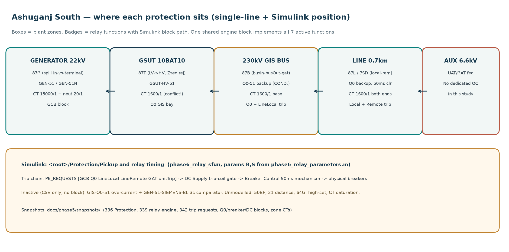
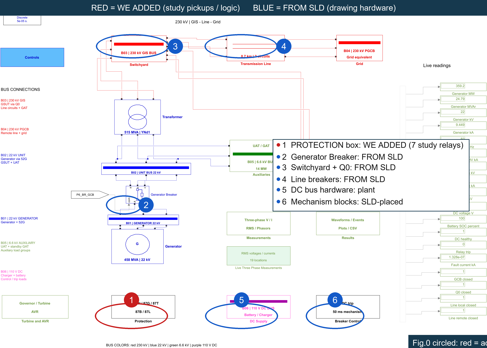
Protection subsystem we engineered containing all 7 relays. Circles 2–6 (BLUE) show physical plant hardware from the SLD: Generator Breaker (2), Switchyard & Q0 (3), Line Breakers (4), DC Battery Supply (5), and Breaker Control (6).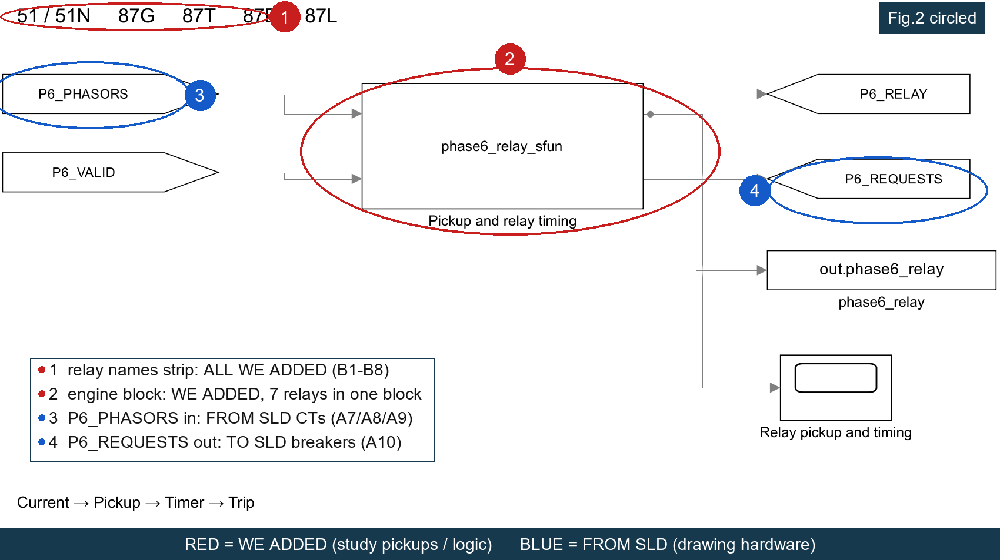
Pickup and relay timing. Circle 3 (BLUE): Incoming CT phasors from SLD instrument transformers. Circle 4 (BLUE): Outgoing trip commands to SLD breakers.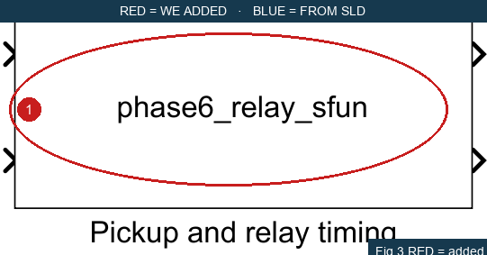
phase6_relay_sfun Level-2 S-function block. Contains the numerical code executing GEN-51, GSUT-51, GEN-51N, 87G, 87T, 87B, and 87L simultaneously.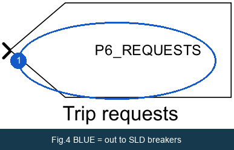
P6_REQUESTS = [GCB, Q0, LineLocal, LineRemote, GAT, unitTrip] directing commands to the respective SLD breakers.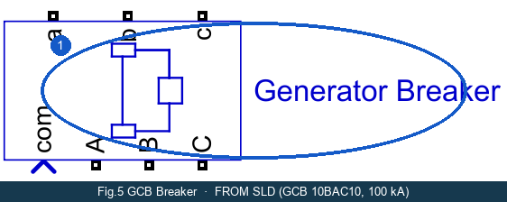
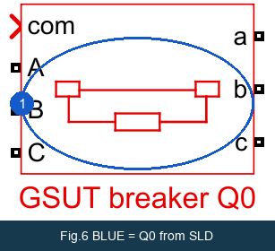
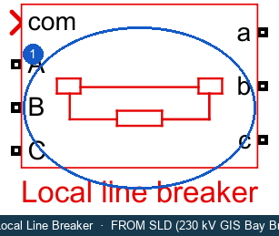
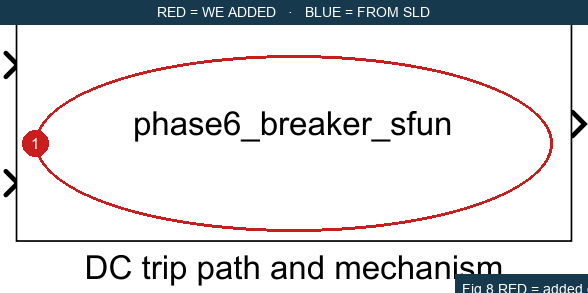
phase6_breaker_sfun enforcing the 50 ms breaker opening mechanism time and DC-healthy interlock.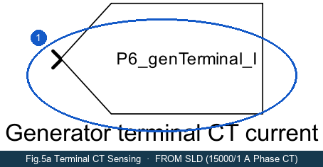
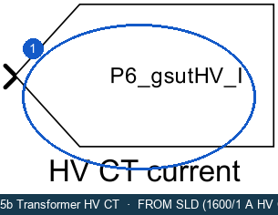
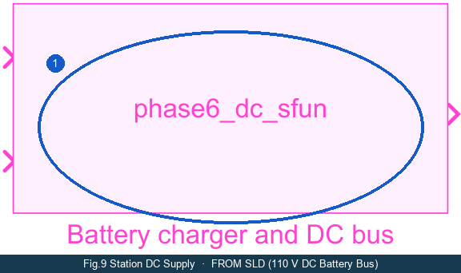
6 · How Each Protection Setting Helped Across All Fault Cases
Our Phase 4 fault analysis calculated prospective bolted fault currents across five key system locations (F1 to F5). Here is the complete breakdown of how our protection settings responded, why primary relays cleared faults at high speed, and how backup relays maintained selective coordination.
Prospective Bolted Fault Current Levels (Phase 4 Backbone):
| Fault Location | Voltage | 3-Phase (LLL) | Single Line-to-Ground (LG) | Line-to-Line (LL) | Double Line-to-Ground (LLG) |
|---|---|---|---|---|---|
| F1 / F2 — Generator & GSUT LV Bus | 22 kV | 126.21 kA (ip 348.3 kA) | 0.00727 kA (7.27 A) | 109.25 kA | 109.25 kA |
| F3 — 230 kV GIS Switchyard Bus | 230 kV | 50.53 kA (ip 129.8 kA) | 45.74 kA | 43.76 kA | 48.50 kA |
| F4 — 230 kV Transmission Line (m = 0.5) | 230 kV | 51.06 kA | 46.12 kA | 44.22 kA | 48.97 kA |
| F5 — Remote Grid Substation Bus | 230 kV | 53.09 kA | 48.47 kA | 45.97 kA | 51.18 kA |
Case F1: 22 kV Generator Bus Fault (The High Current & Ground Fault Story)
3-Phase Fault (126.21 kA): This is the highest fault current in the power plant.
• Primary Action: Generator Differential GEN-87G sees an internal spill current of 55,049 A (well above its 2,403.8 A pickup). It operates instantaneously with a detection time of 0.045 s (45 ms), tripping GCB (52G) and Q0, successfully de-energizing the machine.
• Backup Coordination: If 87G were disabled, GEN-51 operates at 0.594 s, while upstream GSUT-51 operates at 2.354 s. The grading margin is 1.7606 s (far exceeding the 300 ms requirement), ensuring selective backup grading.
Single Line-to-Ground Fault (7.27 A):
• Why Phase Relays are Blind: Phase overcurrent (17,170 A pickup) and 87G differential (2,403.8 A pickup) cannot see 7.27 A. On 15,000/1 A CTs, secondary current is only 0.485 mA.
• How Our Setting Protected It: The dedicated GEN-51N relay operating on our added 20/1 neutral CT sees 7.27 A (secondary current 0.3635 A, well above 0.20 A dial) and trips reliably in 1.746 s. Equipment is saved from progressive stator iron burning!
Case F2: GSUT Low-Voltage Terminal Fault (22 kV)
Located right at the transformer LV bushings.
• Primary Action: Transformer Differential GSUT-87T sees 5,265.5 A differential current on the HV comparison base (far exceeding 387.84 A pickup). It trips instantaneously at 0.045 s.
• Backup Action: GSUT-HV-51 acts as backup, operating at 2.35 s.
• Ground Fault: Since the transformer LV winding is delta (YNd1), ground faults at the LV terminals are restricted by the generator NER to 7.27 A and are cleared by GEN-51N.
Case F3: 230 kV GIS Switchyard Busbar Fault (The 87B Story)
A severe 50.53 kA bolted fault on the 230 kV GIS bus.
• Primary Action: Busbar Differential GIS-87B detects a bus spill current of 47,370 A vs. 320 A pickup. It detects the fault in 0.035 s (35 ms) and issues trip requests to Q0, LineLocal, and GAT incomer. Total fault clearing occurs in ~90 ms (relay 35 ms + breaker 50 ms).
• Why 87B is Crucial: Without 87B, overcurrent backup relay Q0-51 would take 7.28 seconds to trip! Sustaining a 50 kA arc for 7 seconds would completely incinerate the GIS switchgear enclosure. 87B eliminates this catastrophe.
• Delta-Block Verification (Ground Fault): For a 45.74 kA ground fault on the 230 kV bus, GEN-51N sees exactly 0 A because zero-sequence current cannot cross the GSUT delta winding. The fault is grounded through the 230 kV line and grid neutral grounding.
Case F4: 230 kV Transmission Line Mid-Point Fault (m = 0.5)
Bolted fault halfway along the transmission line corridor.
• Primary Action: Line Current Differential LINE-7SD (87L) detects 14,325 A line differential current vs. 320 A pickup. It operates with 0.035 s detection + 0.005 s communication allowance = 0.040 s effective clearing, tripping both local and remote line breakers.
• Backup Action: Q0-51 provides time-overcurrent backup at 7.42 s.
Case F5: Remote Grid Substation Bus Fault (The Backup-Only Story)
Fault occurring on the distant 230 kV grid substation bus (53.09 kA).
• Boundary Honesty: This fault is strictly outside all Ashuganj South unit differential zones (87G, 87T, 87B, 87L all properly restrain). Primary high-speed clearing belongs to the remote substation's own bus protection.
• Local Backup: In case remote breakers fail, local breaker Q0 trips on overcurrent backup in 4.54 s to 7.48 s, protecting our plant from continuous grid feeding.
7 · Closed-Loop Simulation Proof: GIS 3-Phase Bus Fault (bus_3ph)
To mathematically and physically prove that our protection settings work in the dynamic Simulink model, here is the measured event timeline from the closed-loop simulation scenario Phase6/results/bus_3ph/. It clearly shows the distinction between relay detection time, breaker opening time, and current cessation.
| Time (s) | Elapsed from Fault | Physical Event | Evidence Source | Engineering Interpretation |
|---|---|---|---|---|
| 0.1500 s | 0.0 ms | Fault Applied | events.csv | 3-phase short circuit initiated on the 230 kV GIS busbar. |
| 0.1530 s | +3.0 ms | 87B Pickup Detected | relay_times.csv | Differential current exceeds 320 A pickup threshold. Timer starts. Backup relays GEN-51 (0.157s) and GSUT-51 (0.156s) also pick up, but do not trip (correct grading). |
| 0.1870 s | +37.0 ms | 87B Trip Signal Emitted | relay_times.csv | The 35 ms relay timer expires ($0.153 + 0.035 = 0.188\text{ s}$). Trip signal dispatched via P6_REQUESTS. |
| 0.1880 s | +38.0 ms | Trip Coil Energized | events.csv | DC supply confirms voltage is healthy ($V_{dc} = 118\text{ V} \ge 88\text{ V}$) and energizes breaker trip coils. |
| 0.2370 s | +87.0 ms | Breakers Mechanically Part | breaker_times.csv | Exactly 50 ms after trip demand ($0.187 + 0.050 = 0.237\text{ s}$), Q0 and LineLocal breakers reach contact parting. |
| 0.2412 – 0.2476 s | +91 to +97 ms | Current Cessation (Arc Extinguished) | breaker_times.csv | Current passes through natural zero cross and arcs are extinguished. Phase A ceases at 0.2412 s, Phase C at 0.2476 s. Fault cleared! |
| 0.2630 – 0.2680 s | +113 to +118 ms | Relay Dropout & Reset | events.csv | Current is gone; relay resets to idle status. |
8 · Breaker Duty Check: Withstand Screening
Every circuit breaker must be capable of safely interrupting the prospective fault current flowing through its contacts. We screened all calculated fault currents against the certified interrupting ratings of the equipment:
| Breaker | Location / Voltage | Rated Breaking Capacity | Maximum Calculated Duty | Worst-Case Fault Scenario | Duty Ratio | Verdict |
|---|---|---|---|---|---|---|
| GCB (52G / 10BAC10) | Generator Terminals (22 kV) | 100.0 kA | 55.05 kA | F1 3-phase fault (Generator branch contribution) | 0.550 | PASS (< 1.0) |
| GSUT Bay Breaker (Q0) | 230 kV GIS Switchyard | 50.0 kA | 6.90 kA | F1/F2 3-phase fault (Grid backfeed through GSUT) | 0.138 | PASS (< 1.0) |
| GIS Line Bay Breakers | 230 kV Line Bays | 50.0 kA | 17.20 kA | F3 230 kV Bus fault | 0.344 | PASS (< 1.0) |
Conclusion: Zero exceedances found across all 96 coordination and duty screening evaluations. All circuit breakers operate comfortably within their certified thermal and dynamic breaking limits.
9 · Verification & How to Reproduce
All studies, models, and tests can be reproduced directly using the project test suite:
% Inside MATLAB Command Window:
cd('c:/Users/Sindid/OneDrive/Desktop/MouseWithoutBorders/306 Power Project -ekkebare f/306 Power Project -kimi k3-v4')
% 1. Run Phase 5b complete production study & test suite (528 tests):
addpath(genpath('matlab'));
run_phase5b_production('final-engineering', 'overwrite', true);
run_phase5b_tests(); % Expect: 528 passed, 0 failed
% 2. Run Phase 6 Relay Engine & S-Function verification:
addpath('Phase6/scripts'); addpath('Phase6/scripts/tests');
test_phase6_relays();
test_phase6_protection_sfunctions();
% 3. Open Interactive Closed-Loop Simulink Model:
START_PHASE6;
Companion Data Tables (Available in tables/):
tables/relay_settings.csv— Full 9 study settings with exact engineering provenance.tables/coordination.csv— 96-row coordination grading matrix with margins and verdicts.tables/fault_levels.csv— Symmetrical component fault currents (LLL, LG, LL, LLG) at F1 to F5.tables/breaker_duty.csv— Maximum through-currents and breaker duty ratios.tables/first_ring_contributions.csv— Branch current vectors for all fault scenarios.